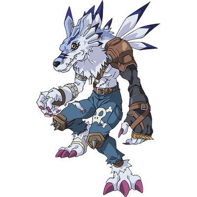
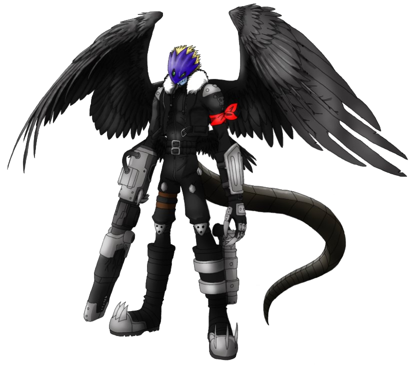
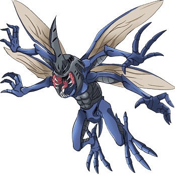

-
Weregarurumon
Descrição
Um Digimon Homem-Besta que evoluiu de Garurumon e tornou-se capaz de andar sobre duas patas. Ao tornar-se bípede, perdeu a velocidade, mas tornou-se num Digimon de estilo comando com maior poder ofensivo e defensivo.
-
Beelzemon
Descrição
Beelzemon é um Lorde Demónio Digimon cujo nome e design são derivados da mitologia "Belze". É um guerreiro demónio distante que possui poder de destruição terrível.
-
Black WarGreymon

Descrição
Temido como o (Dragão Guerreiro Azeviche), é uma espécie Virus de WarGreymon. Apesar da sua crença e princípios serem o oposto dos do WarGreymon Virus Buster, existe para o bem da sua própria e peculiar justiça.
-
kabuterimon
Descrição
Entre os Digimons recém-descobertos, é um Digimon Inseto bastante único. Os detalhes de como evoluiu para um tipo Inseto não estão claros, porém tem tanto o poder de uma formiga como a capacidade defensiva impecável possuída por um besouro.